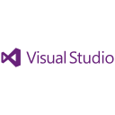
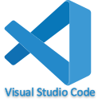
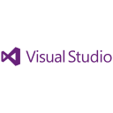
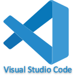

Who is Pretz?
Hello there, I'm Pretz! I use he/him or they/them pronouns.
I'm a software developer in the Midwestern United States experienced with everything from Android applications to web development (catch that "A to Z" pun?). Whether it be a simple hand-coded website like this one or a robust and secure application running on multiple devices and platforms, I've worked on it all.
My passion for software started with problem solving: fixing annoying issues and automating tedious tasks. Even after getting a degree in software development, my development style is still focused on how my contributions and projects can directly affect users. I'm always focused on ensuring what I'm working on serves its users best, even if that means I am not working on the most exciting features of a product.
I'm currently working as a web developer, but I am currently job hunting for a fully-remote position.


 


